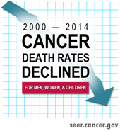
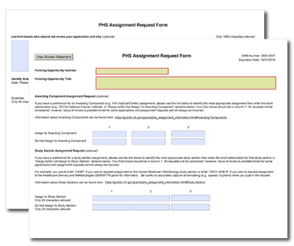

Summer 2017 Newsletter
By Susan Czajkowski, Chief of the Health Behaviors Research Branch

The Health Behaviors Research Branch is one of four branches within the Behavioral Research Program.
Since joining the National Cancer Institute (NCI) as Chief of the Health Behaviors Research Branch (HBRB) a year and a half ago, I’ve been working with branch members and Behavioral Research Program (BRP) colleagues to develop a strategic plan for our branch.
After a year of strategic visioning retreats and discussions, we have a draft plan that updates our vision and mission statements, defines branch goals and objectives, delineates the behavioral risk factors of interest, and describes a framework to guide future branch activities and identify priority areas for advancing the branch’s strategic goals and objectives.
In the plan, we identify the behaviorally based cancer risk factors within our branch’s mission, including behavioral genetics; diet; physical activity and sedentary behavior; energy balance and obesity; sun safety and tanning; and several emerging cancer risk behaviors of interest, such as alcohol use, sleep and circadian dysfunction, and adherence to cancer-related medical and behavioral regimens. We focus on cancer risk behaviors at all points on the cancer control continuum – prevention through detection, diagnosis, treatment and survivorship.
A key element of the strategic plan is acknowledgement of the importance of multilevel influences on cancer-related health behaviors – including biological, psychological, social, sociocultural, environmental, and policy influences. This multilevel approach is coupled with a translational vision that emphasizes achieving meaningful changes in cancer-related health behaviors through systematic, progressive research. We hope to encourage research across all phases of the translational continuum, including foundational work to understand the influences and features of cancer risk behaviors and their contexts; the design, refinement, and testing of strategies aimed at improving cancer risk behaviors; and implementation of successful interventions within public health, clinical, and community contexts.
Please visit our website to learn more about the HBRB grant portfolio, scientific projects, resources, and our staff members’ areas of expertise. You can also find a draft of the strategic plan there, and we invite your feedback as we finalize it this summer. Please feel free to reach out to me or any branch members to share your views on our strategic plan or any issue relevant to cancer-related health behavior research.
Additionally, this newsletter highlights several recent HBRB projects, including a 3-day Sandpit workshop and a FLASHE theme issue in the American Journal of Preventive Medicine. More information about these activities, along with several relevant funding opportunities that may be of interest, is available on our website.
We look forward to seeing many of you at upcoming conferences and to hearing your ideas as we finalize our vision for health behavior research at NCI!
Sincerely,
Susan Czajkowski on behalf of the Health Behaviors Research Branch
Funding
We are pleased to announce several new BRP-initiated and BRP-supported Funding Opportunity Announcements (FOAs). Please visit the Behavioral Research Grants page or the Division of Cancer Control and Population Sciences (DCCPS) Funding Opportunities page for a complete listing.
| Funding Opportunity Announcements | Program Contact |
|---|---|
| Tobacco Regulatory Science (R01) RFA OD-17-013 (reissue of RFA-OD-13-011) Tobacco Regulatory Science (R21) RFA OD-17-014 (reissue of RFA-OD-13-010) Tobacco Regulatory Science Small Grant Program for New Investigators (R03) RFA OD-17-012 (reissue of RFA-OD-15-004) Tobacco Centers of Regulatory Science for Research Relevant to the Family Smoking Prevention and Tobacco Control Act (U54) RFA-OD-17-006 (reissue of RFA-OD-17-003) |
Rachel Grana Mayne 240-276-5899 rachel.mayne@nih.gov |
U.S. Tobacco Control Policies to Reduce Health Disparities PAR-17-217 (R01) |
 Bob Vollinger 240-276-6919 bob.vollinger@nih.gov |
| Intensive Longitudinal Analysis of Health Behaviors: Leveraging New Technologies to Understand Health Behaviors * RFA-OD-17-004 (U01) RFA-OD-17-005 (U24) |
For cancer-related FOA questions:  Richard P. Moser 240-276-6915 moserr@mail.nih.gov For general FOA questions: Dana Wolff-Hughes Office of Behavioral and Social Sciences Research (OBSSR) 301-496-0979 dana.wolff@nih.gov |
* The U01 funding mechanism is a cooperative agreement that encourages research to uncover the underlying mechanisms that predict and explain how health behaviors develop and are maintained over time. The methods used should utilize intensive, longitudinal within-person protocols that take advantage of advances in mobile and wireless technology and big data analytics. The projects should incorporate theoretical constructs used across health behavior theories, and the results from the studies should inform and enhance our theoretical understanding of behavior change and maintenance.
The U24 funding mechanism solicits proposals to establish a Research Coordinating Center (RCC) that would support the individual U01s associated with this initiative. The RCC will facilitate work across the funded U01s by providing administrative and scientific support including communications, coordination of meetings, and data harmonization, integration, and dissemination activities.
Scientific Advances
Weight Status and Mortality: A Complex Relationship
Those few extra pounds might be more detrimental to your health than you think. A recent analysis by DCCPS-funded researchers reviewed three prospective cohort studies to investigate the relationship between Body Mass Index over a 16-year period, and subsequent mortality. They found elevated death rates among those who had been overweight or obese at any point, but the highest death rates were among people who were once overweight or obese, and then lost a lot of weight. Because successful intentional weight loss is rare, it is likely that most of the subjects’ weight loss was due to illness.
Reference: Yu, E., Ley, S.H., Manson, J.E., Willett, W., Satija, A., Hu, F.B., Stokes, A. Weight History and All-Cause and Cause-Specific Mortality in Three Prospective Cohort Studies. (2017) Annals of Internal Medicine 166(9):613-620. doi: 10.7326/M16-1390.
Grant Citation: Long Term Multidisciplinary Study of Cancer in Women: The Nurses Health Study. Meir Stampfer, Brigham and Women’s Hospital, UM1CA186107-03.
Relationship of Cigarette Smoking Through Adolescence and Weight Status in Young Adulthood
Cancer Prevention Fellow Minal Patel and BRP colleagues Annette Kaufman, Yvonne Prutzman, and Linda Nebeling recently published a paper on the longitudinal association of cigarette smoking and weight status in youth and young adulthood. Using data from Waves I–IV of the National Longitudinal Study of Adolescent to Adult Health  , collected between 1995-96 and 2007-08, they identified four distinct trajectories of cigarette smoking in adolescents: nonsmokers (44 percent); early establishers (23 percent); late establishers (21 percent); and former smokers (12 percent). Results indicated that smoking throughout adolescence was modestly associated with lower weight gain into young adulthood. However, weight gain throughout adolescence into young adulthood was prevalent across all four trajectories. Thus, smoking did not mitigate obesity risk. These results have implications for research and interventions to help youth and young adults avoid both smoking and obesity.
, collected between 1995-96 and 2007-08, they identified four distinct trajectories of cigarette smoking in adolescents: nonsmokers (44 percent); early establishers (23 percent); late establishers (21 percent); and former smokers (12 percent). Results indicated that smoking throughout adolescence was modestly associated with lower weight gain into young adulthood. However, weight gain throughout adolescence into young adulthood was prevalent across all four trajectories. Thus, smoking did not mitigate obesity risk. These results have implications for research and interventions to help youth and young adults avoid both smoking and obesity.
Reference: Patel, M., Kaufman, A., Hunt, Y., Nebeling, L. Understanding the Relationship of Cigarette Smoking Trajectories Through Adolescence and Weight Status in Young Adulthood in the United States (2017) Journal of Adolesc Health doi: 10.1016/j.jadohealth.2017.02.005. [Epub ahead of print].
Improving Health Disparities Research Through New Data Technology
Health Behaviors Research Branch Program Director David Berrigan contributed to a commentary about the potential contributions new data and new data technology could make to health disparities research. The commentary emphasizes three priority needs: 1) standardized demographic and social determinant variables across diverse sources of data; 2) better linkages between spatial, social determinant, and clinical data; and 3) efforts to better connect etiological discoveries to the design of interventions that target disparities. The commentary also highlights barriers for better use of big data in health disparities research.
Reference: Zhang, X., Pérez-Stable, E.J., Bourne, P.E., Peprah, E., Duru, O.K., Breen, N., Berrigan, D., Wood, F., Jackson, J.S., Wong, D.W.S., Denny, J. Big Data Science: Opportunities and Challenges to Address Minority Health and Health Disparities in the 21st Century. (2017) Ethnicity & Disease 27(2):95-106. doi: 10.18865/ed.27.2.95.
Annual Report to the Nation: Cancer Death Rates Continue to Decline
Overall cancer death rates continue to decrease in men, women, and children for all major racial and ethnic groups, per the latest Annual Report to the Nation on the Status of Cancer, 1975-2014. The report finds that death rates between 2010-14 decreased for 11 of the 16 most common types of cancer in men and for 13 of the 18 most common types of cancer in women, including lung, colorectal, female breast, and prostate cancers. Meanwhile, death rates increased for cancers of the liver, pancreas, and brain in men and for liver and uterine cancers in women. The report finds overall cancer incidence rates – or rates of new cancers – decreased in men but stabilized in women between 1999 and 2013. Doug Lowy, Acting NCI Director, offers his perspective in the Cancer Currents Blog, Making Greater Progress Against Cancer—Not Just a Hope but a Reality.
Reference: Annual Report to the Nation on the Status of Cancer, 1975–2014, Featuring Survival J Natl Cancer Inst (2017) 109(9): djx030 doi: 10.1093/jnci/djx030
To view the full report, see: https://academic.oup.com/jnci/article/109/9/djx030/3092246  ,
,
Parental Smoking Linked to Increased Frequency of Genetic Changes in Children Who Develop Childhood Cancer
A study, funded in part by DCCPS, is the first to link smoking by both parents to somatic deletions in the tumor cells of children who develop acute lymphoblastic leukemia (ALL), the most common cancer in children under 15. In a study of childhood leukemia cases in California, researchers analyzed data on pre-treatment tumor samples of 559 children with ALL. They found that nearly two-thirds of the tumor samples contained at least one of the eight gene deletions commonly missing in ALL patients. They also found deletions were more common in children whose mothers ever-smoked, smoked throughout pregnancy or breastfeeding, whose fathers smoked preconception, and in children exposed to postnatal passive smoking. Dose–response relationships were observed for paternal smoking during preconception and for maternal smoking during breastfeeding (an increase in mean deletions with increasing cigarettes per day smoked). The cumulative effects of maternal and paternal prenatal smoking with the child’s postnatal passive smoking indicate that heavy, long-term tobacco exposure further increases the risk of somatic mutations in children who later develop ALL. Findings support that prenatal and early-life tobacco smoke exposure should be especially limited in children.
Reference: de Smith, A.J., Kaur, M., Gonseth, S., Endicott, A., Selvin, S., Zhang, L., Roy, R., Shao, X., Hansen, H.M., Kang, A.Y., Walsh, K.M., Dahl, G.V., McKean-Cowdin, R., Metayer, C., Wiemels, J.L. Correlates of Prenatal and Early-Life Tobacco Smoke Exposure and Frequency of Common Gene Deletions in Childhood Acute Lymphoblastic Leukemia. (2017) Cancer Research. doi: 10.1158/0008-5472.CAN-16-2571.
Grant Citation: Genome-wide Association Study of Childhood Leukemia by Hispanic Status. Joseph L. Wiemels, University of California San Francisco, R01CA155461-04.
Disparity in Breast Cancer Treatment Experience Among Low-acculturated Latina Women
NCI grantee Steven J. Katz and colleagues surveyed 5,080 women with a new diagnosis of breast cancer in Los Angeles County, California, and Georgia between 2013-15 to determine whether any racial or ethnic differences existed in patient perspectives regarding their breast cancer treatment experiences. The pattern of visits with specialists prior to surgery and the percentage of patients reporting high satisfaction with their physician was similar across all racial and ethnic groups. However, the researchers found low acculturated Latinas were less likely to report high clinician communication quality for both surgeons and medical oncologists, were more likely to report a low-autonomy decision style, and were more likely to report receiving too much information compared to other ethnic groups.
Reference: Katz, S.J., Wallner, L.P., Abrahamse, P.H., Janz, N.K., Martinez, K.A., Shumway, D.A., Hamilton, A.S., Ward, K.C., Resnicow, K.A., Hawley, S.T. Treatment experiences of Latinas after diagnosis of breast cancer. (2017) Cancer doi: 10.1002/cncr.30702. [Epub ahead of print].
Grant Citation: The Challenge of Individualizing Treatments for Patients with Breast Cancer. Steven J. Katz, University of Michigan, P01CA163233-05.
Tai Chi Chih Improves Insomnia Among Breast Cancer Survivors
Basic Biobehavioral and Psychological Sciences Branch grantee Michael Irwin and colleagues conducted a randomized, partially blinded, noninferiority trial of breast cancer survivors with insomnia in the Los Angeles area from 2008-12 to compare cognitive behavioral therapy for insomnia (CBT-I) and tai chi chih (TCC) - a movement meditation - as a treatment for insomnia symptoms associated with survivorship status. Participants were randomly assigned to receive either intervention for 3 months and were then followed for 1 year post-treatment. The researchers found both treatments showed benefits over 1 year, and TCC was just as effective as CBT-I in improving sleep symptoms with the additional benefit of improving symptoms of depression and fatigue. CBT-I is considered the “gold standard” for treating insomnia.
Reference: Irwin, M.R., Olmstead, R., Carrillo, C., Sadeghi, N., Nicassio, P., Ganz, P.A., Bower, J.E. Tai Chi Chih Compared With Cognitive Behavioral Therapy for the Treatment of Insomnia in Survivors of Breast Cancer: A Randomized, Partially Blinded, Noninferiority Trial. (2017) J Clin Oncol. doi: 10.1200/JCO.2016.71.0285. [Epub ahead of print]
Grant Citation: Tai Chi Effects on Chronic Insomnia in Breast Cancer Survivors. Michael R Irwin, University of California Los Angeles, R01CA119159-05.
'Light' Filtered Cigarettes Associated with an Increased Rate of Lung Adenocarcinoma Among Smokers
An in-depth analysis of published scientific literature and internal tobacco company documents, conducted by NCI- and FDA-funded researchers, has found a relationship between the addition of ventilation holes in cigarettes and the rise in lung adenocarcinomas among smokers seen since the early 1970s. Beginning in the mid-1960s, low tar or light cigarettes were falsely marketed and promoted by the tobacco industry as less harmful than full-flavor cigarettes, promising reduced exposure to tar and nicotine (REF to RICO trial). A central feature of this strategy was the introduction of ventilation holes in cigarette filters. However, smokers who switched to light cigarettes tend to inhale more smoke to maintain their nicotine intake and have a false perception that light cigarettes lower their health risks. Smokers of light/low tar cigarettes also showed an increase in adenocarcinoma rates relative to other lung cancer subtypes. According to the newly published research, the association of light/low tar cigarettes with adenocarcinoma may be attributed in part to filter ventilation, which alters tobacco combustion and changes the chemical composition and mix of toxicants in tobacco smoke. The paper is accompanied by an editorial that explores the implications for FDA regulation of the new research.
References: Song, M.A., Benowitz, N.L., Berman, M., Brasky, T.M., Cummings, K.M., Hatsukami, D.K., Marian, C., O'Connor, R., Rees, V.W., Woroszylo, C., Shields, P.G. Cigarette Filter Ventilation and its Relationship to Increasing Rates of Lung Adenocarcinoma. (2017) J Natl Cancer Inst 109(12). doi: 10.1093/jnci/djx075.
Samet, J.M., Aladadyan, L. Editorial. Should the FDA Ban Cigarette Filter Ventilation? (2017) J Natl Cancer Inst 109(12) doi: 10.1093/jnci/djx073.
Geospatial Approaches to Cancer Control
The April issue of Cancer Epidemiology, Biomarkers and Prevention  includes a focus section called “Geospatial Approaches to Cancer Control and Population Sciences.” The section contains an introduction, commentary, and twelve articles that report original results. The section arose from a DCCPS-sponsored conference concerning this topic area held in September 2016. The introduction
includes a focus section called “Geospatial Approaches to Cancer Control and Population Sciences.” The section contains an introduction, commentary, and twelve articles that report original results. The section arose from a DCCPS-sponsored conference concerning this topic area held in September 2016. The introduction  was authored by DCCPS staff and an outside conference organizing committee (Schootman, M., Gomez, S.L., Henry, K.A., Paskett, E.D., Ellison, G.L., Oh, A., Taplin, S.H., Tatalovich, Z., Berrigan, D.A.). One highlight of the focus issue is a commentary
was authored by DCCPS staff and an outside conference organizing committee (Schootman, M., Gomez, S.L., Henry, K.A., Paskett, E.D., Ellison, G.L., Oh, A., Taplin, S.H., Tatalovich, Z., Berrigan, D.A.). One highlight of the focus issue is a commentary  by Nancy Krieger, a conference speaker, who wrote “…precondition to meaningful geospatial analysis of cancer, and by extension, any other health outcome, is deep engagement with the dynamic lived realities of place.”
by Nancy Krieger, a conference speaker, who wrote “…precondition to meaningful geospatial analysis of cancer, and by extension, any other health outcome, is deep engagement with the dynamic lived realities of place.”
Reference: Schootman, M., Gomez, S.L., Henry, K.A., Paskett, E.D., Ellison, G.L., Oh, A., Taplin, S.H., Tatalovich, Z., Berrigan, D.A. Geospatial Approaches to Cancer Control and Population Sciences. (2017) Cancer Epidemiol Biomarkers Prev. 26(4):472-475. doi: 10.1158/1055-9965
Researchers Find Positive Association Between Indoor Tanning and Sunburn
Program Directors Frank Perna and Anne Hartman, former BRP fellow Andrew Seidenberg, and CDC colleagues conducted an analysis of National Health Interview Survey (NHIS) data and found a decrease in indoor tanning among U.S. adults from 2010-15. They also found a positive association between indoor tanning and sunburn.
Reference: Guy, G.P., Watson, M., Seidenberg, A.B., Hartman, A.M., Holman, D.M., Perna, F. Trends in indoor tanning and its association with sunburn among US adults. J Am Acad Dermatol. 2016;76(6):1191-1193. doi: https://dx.doi.org/10.1016/j.jaad.2017.01.022
Japanese Psychological Research Highlights Visual Search and Related Topics
Program Director Todd Horowitz co-edited a special issue of Japanese Psychological Research with Jun Saiki. The issue was published in April and includes an editorial, an invited review, five original articles, and three brief reports on visual search and related topics. Dr. Horowitz conducted a meta-analysis  of the effects of low prevalence on visual search performance, with both a clinical and basic psychological science perspective. In their commentary, Drs. Horowitz and Jun express hope that search studies, such as these, help people better understand cognitive failures so that fewer medical and security mistakes will be made in the future.
of the effects of low prevalence on visual search performance, with both a clinical and basic psychological science perspective. In their commentary, Drs. Horowitz and Jun express hope that search studies, such as these, help people better understand cognitive failures so that fewer medical and security mistakes will be made in the future.
Reference: Horowitz T., Saiki J., guest eds. Search: A New Perspective to Understand Cognitive Dynamics. Japanese Psychological Research 2017 59 (2, special issue):59-199.
FLASHE AJPM release
A theme issue focused on BRP’s Family Life, Activity, Sun, Health, and Eating (FLASHE) Study was published in the June 2017 issue of the American Journal of Preventive Medicine  . The articles in this theme issue present information on: 1) the FLASHE study development, 2) recruitment and methodology, 3) assessment of dietary and physical activity behaviors, and 4) individual- and dyad-level analyses using FLASHE data. Authors included several BRP staff and collaborators. For example, a paper by Linda Nebeling and colleagues describes the development of the FLASHE survey, dyadic perspectives, and participant characteristics. Another article by Laura Dwyer and colleagues uses FLASHE data to assess associations between fruit and vegetable intake in dyads. A third paper by Heather D’Angelo, et al, focuses on individual and neighborhood variables associated with adolescent physical activity using FLASHE data.
. The articles in this theme issue present information on: 1) the FLASHE study development, 2) recruitment and methodology, 3) assessment of dietary and physical activity behaviors, and 4) individual- and dyad-level analyses using FLASHE data. Authors included several BRP staff and collaborators. For example, a paper by Linda Nebeling and colleagues describes the development of the FLASHE survey, dyadic perspectives, and participant characteristics. Another article by Laura Dwyer and colleagues uses FLASHE data to assess associations between fruit and vegetable intake in dyads. A third paper by Heather D’Angelo, et al, focuses on individual and neighborhood variables associated with adolescent physical activity using FLASHE data.
References: Lytle L.A., Mâsse L.C., guest eds. The Family Life, Activity, Sun, Health, and Eating (FLASHE) Study: Insights Into Cancer-Prevention Behaviors Among Parent-Adolescent Dyads. (2017) Am J Prev Med 2017 52 (6, theme issue):833-894.
Nebeling, L.C., Hennessy. E., Oh, A.Y., Dwyer, L.A., Patrick, H., Blanck, H.M., Perna, F.M., Ferrer, R.A., Yaroch, A.L. The FLASHE study: Survey development, dyadic perspectives, and participant characteristics. (2017) Am J Prev Med. 52(6):839-848. doi: 10.1016/j.amepre.2017.01.028
Dwyer, L.A., Bolger, N., Laurenceau, J.P., Patrick, H., Oh, A.Y., Nebeling, L.C., Hennessy, E. Autonomous motivation and fruit/vegetable intake in parent-adolescent dyads. (2017) Am J Prev Med. 52(6):863-871. doi: 10.1016/j.amepre.2017.01.011
D’Angelo, H., Fowler, S.L., Nebeling, L.C., Oh, A.Y. Adolescent physical activity: Moderation of individual factors by neighborhood environment. (2017) Am J Prev Med. 52(6):888-894. doi: 10.1016/j.amepre.2017.01.013
Oxford Handbook on Interdisciplinarity Includes Chapter on Team Science
Health Behaviors Research Branch Program Director Kara Hall and colleagues Brooke Stipelman, Amanda Vogel, and Dan Stokols contributed a chapter to the recently published the Oxford Handbook on Interdisciplinarity, 2nd Edition. The handbook provides a synoptic overview of the current state of interdisciplinary research, education, administration and management. The chapter by Hall and colleagues discusses the history of the Science of Team Science  (SciTS) field, highlights key concepts, and reviews several conceptual models that can aid in engaging in, facilitating, supporting, and evaluating cross- disciplinary team-based research.
(SciTS) field, highlights key concepts, and reviews several conceptual models that can aid in engaging in, facilitating, supporting, and evaluating cross- disciplinary team-based research.
Hall, K. L., Stipelman, B. A., Vogel, A. L., & Stokols, D. (2017). Understanding cross-disciplinary team-based research: Concepts and conceptual models from the Science of Team Science. In Frodeman, R., Klein, J. T., & Mitcham, C. (Eds). Oxford Handbook on Interdisciplinarity, 2nd Edition (338-356) Oxford, UK: Oxford University Press.
BRP Training Opportunities
Post-Master or Post-Doctoral Cancer Research Training Award Fellowship, Basic Biobehavioral and Psychological Sciences Research Branch (BBPSB): The program invites applications from qualified candidates for a full-time fellowship position. Experience developing and executing analytical plans for large data sets, interpreting results, and presenting results in oral and written communications is required. Proficiency in SPSS and/or SAS is preferred. Interested candidates should send application materials to Donna Hopkins at donna.hopkins@nih.gov.
Cancer Prevention Fellow Program: This unique postdoctoral research and leadership training program is open to researchers, scientists, and clinicians with a demonstrated interest in cancer prevention and control. It is multidisciplinary by nature, and fellows are selected from a variety of disciplines and backgrounds. The application deadline is August 25. To learn more about the fellowship, including eligibility requirements, visit https://cpfp.cancer.gov/.
Recognitions & Accomplishments
Smokefree.gov Wins Two Telly Awards for Teen Cessation Video
The Telly Awards recently awarded Smokefree.gov two Bronze Telly Awards for the “Better With a Friend” short video, which promotes Smokefree.gov cessation resources to teens. The video, which features a high school football player setting up for a snap and ultimately throwing the ball to an empty football field, notes that though there are some things you can do own your own, quitting smoking shouldn’t be one of them. Smokefree.gov created the video during a 2015-16 paid media campaign promoting Smokefree.gov cessation resources to vulnerable populations, including teens. The Telly Awards, which are the premier award honoring the best in TV and cable, digital, streaming, and non-broadcast productions, recognized the Better With a Friend video with bronze awards in two categories – “Digital & Streaming – Short Form/Social – Products & Services,” and “Digital & Streaming – Short Form/Social – Public Service/Activism.” On average, the awards receive more than 13,000 entries each year from all 50 states and countries across five continents. For more information on the awards, visit https://www.tellyawards.com/about/about/  .
.
Policy Impact Award from the American Association for Public Opinion Research (AAPOR)
The International Tobacco Control Policy Evaluation (ITC) Project, led by Mike Cummings and Geoff Fong, was awarded the prestigious 2017 Policy Impact Award  from the American Association for Public Opinion Research (AAPOR) at the 72nd Annual AAPOR Conference
from the American Association for Public Opinion Research (AAPOR) at the 72nd Annual AAPOR Conference  held May 18-21, 2017, in New Orleans, Louisiana. The award recognizes outstanding research that has resulted in a clear impact on improving policy decisions, practice, and discourse, either in the public or private sectors. The ITC Project
held May 18-21, 2017, in New Orleans, Louisiana. The award recognizes outstanding research that has resulted in a clear impact on improving policy decisions, practice, and discourse, either in the public or private sectors. The ITC Project  involves 150 tobacco-control researchers who conduct longitudinal cohort surveys to provide scientific evidence to inform governments, policymakers, and civil society in 28 countries. To date, the ITC Project has received more than 60 research grants totaling $75 million, including major project and operating grants from NCI (two P01s, one P50, and five R01s).
involves 150 tobacco-control researchers who conduct longitudinal cohort surveys to provide scientific evidence to inform governments, policymakers, and civil society in 28 countries. To date, the ITC Project has received more than 60 research grants totaling $75 million, including major project and operating grants from NCI (two P01s, one P50, and five R01s).
SPeeding Research-tested INTerventions (SPRINT)
SPRINT  is a program designed to foster, grow, and nurture an innovation ecosystem for behavioral interventionists to create research-tested behavioral interventions that are ready to be put into real-world practice. The program is sponsored by NCI and run by instructors with extensive startup and teaching experience. The program provides hands-on training on how to successfully transform innovations in cancer control into market-ready products.
is a program designed to foster, grow, and nurture an innovation ecosystem for behavioral interventionists to create research-tested behavioral interventions that are ready to be put into real-world practice. The program is sponsored by NCI and run by instructors with extensive startup and teaching experience. The program provides hands-on training on how to successfully transform innovations in cancer control into market-ready products.
This spring, NCI invited 10 teams to join the SPRINT cohort. Training concluded on June 15, 2017. Congratulations to these investigators for all their work to bring their evidence-based interventions into practice.
The selected teams were:
| Primary Investigator | Team Name | Institution |
|---|---|---|
| Dr. Anthony Viera | Bringing Our PACE to a SPRINT | University of North Carolina at Chapel Hill |
| Dr. Hoda Badr | CareSTEPS | Baylor College of Medicine |
| Dr. Allen Greiner | From Intention to Action | University of Kansas Medical Center |
| Dr. Debra Parker Oliver | Hospice Caregiving Research Network | University of Missouri |
| Dr. Todd Lucas | Justitia Health Communication | Wayne State University |
| Dr. Angela Bradbury | Penn Telegenetics Program | University of Pennsylvania |
| Dr. Cheryl Holt | Project HEAL | University of Maryland |
| Dr. Jasmin Tiro | Self-Persuasion | University of Texas Southwestern Medical Center |
| Dr. Matthew Buman | Stand & Move at Work | Arizona State University |
| Dr. Tamara Somers | Team Pain | Duke University Medical Center |
Lifetime Achievement Award for Science of Team Science
Health Behaviors Research Branch Program Director Kara Hall received the 2017 SciTS Recognition Award on June 13 for her “vision, dedication, and leadership in helping to establish, and continuing to advance, the Science of Team Science (SciTS) field.” Dr. Hall’s work aims to build an evidence base for effective team science and to support the translation of emerging knowledge into policies and practices to enhance the quality, innovativeness, and speed of scientific advances that can improve the health and wellness across the globe. Dr. Hall has contributed key empirical, methodological, and conceptual advances in the field. She has led efforts to synthesize and disseminate SciTS scholarship, including chairing the Annual International SciTS conference for the past four years, editing special journal issues, chairing the Annual SciTS Conferences, serving on advisory boards and delivering keynotes to stakeholders throughout the scientific enterprise. Notably, she served as a member of The National Academies Committee on the Science of Team Science (2012-15); the resulting report, Enhancing the Effectiveness of Team Science, was the third most downloaded National Academies Press report in 2015.
Resources, Research Tools, and Events
Visit Our Webinar Page for Funding Resources and Other Training Opportunities
We have created a dedicated webinar page on our website to enable researchers to easily access all archived webinar resources on funding opportunities and other trainings. Examples of webinars include:
- Oral Anticancer Agents: Utilization, Adherence, and Health Care Delivery PA-17-060 (R01) and PA-17-061 (R21)
- Cancer-related Behavioral Research through Integrating Existing Data PAR-16-256 (R01) and PAR-16-255 (R21)
- Perception and Cognition Research to Inform Cancer Image Interpretation PAR-17-125 (R01) and PAR-17-124 (R21)
- Tobacco Use and HIV in Low and Middle Income Countries PAR-17-087 (R01) and PAR-17-086 (R21)
30 Smoke-Free Days Event
From July 10 to August 9, 2017, NCI and the Centers for Disease Control and Prevention’s Office on Smoking and Health (OSH) are partnering on 30 Smokefree Days, an online Facebook event that supports people who want to quit smoking. Throughout the 30-day event, participants will receive links to quit resources, quit tips, encouragement, milestone badges, and exclusive video content with words of advice from Tips From Former Smokers™ participants. In addition, Tobacco Cessation Research Branch Program Directors Yvonne Prutzman and Erik Augustson and other NCI staff will host livestream Facebook Live events throughout the initiative that will cover specific topics relevant to cessation, provide guidance on successful quit skills, and answer smokers’ questions.
New Tutorials on Preparing and Submitting an NIH Grant Application
The NIH Extramural Program developed a new set of tutorials to assist investigators who are new to the NIH grant process. The four-part interactive series offers the basics of preparing, writing, and submitting your application. Tutorials are between 4 to 11 minutes each and are broken into chapters so users can easily navigate between sections. The tutorials also link to additional resources and transcripts. Watch the grant tutorials »
New NIH Form to Request Assignments for Incoming Grant Applications
As of March 24, 2017, principal investigators (PI) should use SF424 (R&R) Forms Version D when requesting specific application assignments and review requests for incoming grant applications. This information was previously collected in the cover letter attachment. The benefit of using this form is that it allows PIs to request study sections assignment and list appropriate expertise. In some cases, the reviewing institute is pre-determined, so assignment requests cannot be honored. And, like the cover letter, this form is not considered part of the application and does not get uploaded into the eGrants file.
New NIH Clinical Trials Policies
In September 2016, the NIH released new policies and processes to help improve NIH’s stewardship, accountability, and transparency of clinical trials. Although these policies and efforts were developed primarily with the traditional biomedical clinical trial in mind, they are applicable to social and behavioral trials as well. As a starting point, a new NIH definition of the term “clinical trial” was developed. It is defined as “A research study in which one or more human subjects are prospectively assigned to one or more interventions (which may include placebo or control) to evaluate the effects of those interventions on health-related biomedical or behavioral outcomes.” Once determined that your research meets the NIH definition of a clinical trial, behavioral and social science researchers need to know and adhere to several recently released NIH clinical trials policies and efforts that span from grant submission through dissemination of findings. The NIH Office of Behavioral and Social Sciences Research published a comprehensive article to help researchers adhere to these new policies and efforts.
UK and US teams brainstormed cancer research project ideas. Photo credit: Julia Figliotti
Intensive Workshop Brings Researchers Together from United States and United Kingdom
The Behavioral Research Program, in partnership with Cancer Research United Kingdom  (CRUK), hosted a 3-day residential “Sandpit” workshop (i.e., ideas lab) on April 24-26, 2017, in Potomac, Maryland. A broad, multidisciplinary group of participants engaged in an intensive, interactive experience to develop innovative research project ideas that cut across behavioral domains, professional sectors, and geographic boundaries to address five key cancer-related health behaviors: tobacco use, alcohol consumption, dietary behavior, physical activity, and UV exposure. During the workshop, participants formed multidisciplinary teams, refined project ideas, and received guidance on applying for seed funding from CRUK to test the feasibility of their ideas. Five projects were recommended for CRUK grant seed-funding and invited to submit more detailed applications, with the aim that projects will begin August 2017.
(CRUK), hosted a 3-day residential “Sandpit” workshop (i.e., ideas lab) on April 24-26, 2017, in Potomac, Maryland. A broad, multidisciplinary group of participants engaged in an intensive, interactive experience to develop innovative research project ideas that cut across behavioral domains, professional sectors, and geographic boundaries to address five key cancer-related health behaviors: tobacco use, alcohol consumption, dietary behavior, physical activity, and UV exposure. During the workshop, participants formed multidisciplinary teams, refined project ideas, and received guidance on applying for seed funding from CRUK to test the feasibility of their ideas. Five projects were recommended for CRUK grant seed-funding and invited to submit more detailed applications, with the aim that projects will begin August 2017.